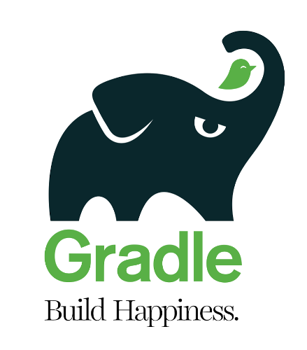

Call me Apache Groovy
Cédric Champeau (@CedricChampeau)
Groovy & Grails exchange
Year 2003
Highlights
Creating a dynamic language for the JVM
Inspired by Ruby
Year 2004
Highlights
Builders (XML by John Wilson)
Antlr grammar (Jeremy Rayner)
Year 2005
Highlights
James leaves the project
Grails work started
Year 2006
Highlights
Guillaume takes lead
Windows installer (Joachim Baumann)
Grails 0.1
Year 2007
Groovy 1.0 released!
Year 2007
Year 2007
Highlights
Groovy 1.5
On par with Java (generics, annotations, enums…)
Elvis operator
Joint compiler
First Groovy and Grails eXchange
Year 2008
Year 2008
Highlights
Grails 1.0 released
G2One acquired by SpringSource
Year 2009
I can honestly say if someone had shown me the Programming Scala book by Martin Odersky, Lex Spoon & Bill Venners back in 2003 I’d probably have never created Groovy.
— James Strachan
Highlights
Groovy 1.6
performance improvements
AST xforms
Year 2010
Highlights
Groovy 1.7
Anonymous inner classes
Power Asserts
Grape
Customizing the Truth
Year 2011
Highlights
Groovy 1.8
Performance
Command chain expressions
Closures as annotations values (GContracts, …)
Grails 2.0
Year 2012
Highlights
Groovy 2.0
@CompileStaticmodularization
alternate runtime
Gradle 1.0
Year 2013
52 unique contributors!
Highlights
Groovy 2.1
Full invokedynamic support
type checking extensions
@DelegatesTometa-annotations
Groovy 2.2
implicit closure coercion
improved AST xforms (
@Memoized, …)
GPars 1.0
Year 2014
66 unique contributors!
Highlights
Groovy 2.3
Runs on JDK 8
Traits
Markup Template Engine
Gradle 2.0
Year 2015
Highlights
Pivotal stops sponsoring
Groovy 2.4
Android support
Smaller bytecode
Grails 3.0
OCI takes over Grails
Gradleware becomes Gradle, Inc
PMC
Guillaume Laforge (PMC Chair)
Cédric Champeau
Paul King
Guillaume Laforge
Pascal Schumacher
Jochen Theodorou
Andrew Bayer
Jim Jagielski
Roman Shaposhnik
Konstantin Boudnik
Committers
Andrés Almiray
Dierk König
Russel Winder
Keegan Witt
Shil Sinha
Graeme Rocher
Community over code
Groovy guys
GPars
GPars
GPars
Griffon
Gradle
Gradle
Year 2016
Highlights
Groovy 2.5
Macros
Groovy 3.0 development
Jigsaw?
Binary compatibility?
Require JDK8+?
Cheers
Thanks to all our contributors!
Credits
